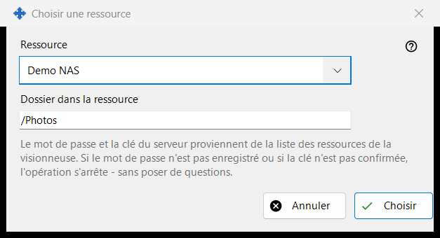
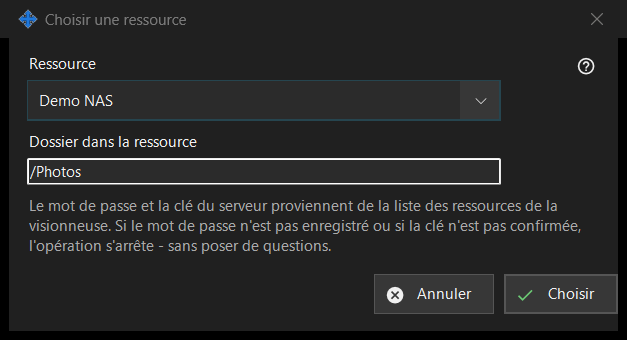

Choisir une ressource
Objectif
Choisit une ressource de la liste des ressources de la visionneuse comme source ou destination d'une opération planifiée. Elle s'ouvre depuis «Ressource..» à côté de Source ou Destination dans la fenêtre de l'opération planifiée.


Dans cet ordre
- Choisissez la ressource dans la liste «Ressource».
- Vérifiez ou modifiez «Dossier dans la ressource» ; il commence au dossier racine de la ressource.
- Cliquez sur «Choisir». «Annuler» conserve l'emplacement précédent.
Les éléments
Liste des ressources
Seuls les serveurs SFTP et les dossiers réseau de la liste de la visionneuse sont proposés, triés par nom ; les ressources d'autres types n'apparaissent pas. S'il n'y en a aucun, la fenêtre indique : «La liste des ressources ne contient aucune ressource adaptée. Ajoutez un serveur SFTP ou un dossier réseau dans la visionneuse.» et «Choisir» reste désactivé. L'ajout d'une ressource ou la reconfirmation de sa confiance se fait dans la visionneuse ; cette fenêtre n'établit aucune connexion.
Dossier dans la ressource
Le dossier doit se trouver dans la racine de la ressource choisie, sinon «Enregistrer» dans la fenêtre de l'opération le refuse. Choisir une autre ressource remplit de nouveau la zone avec la racine de cette ressource.
S'exécute sans poser de questions
Le mot de passe et la clé du serveur viennent de la liste des ressources de la visionneuse. Une exécution ne demande rien : si le mot de passe n'est pas enregistré ou si la clé du serveur n'est pas confirmée, l'opération s'arrête et l'historique en indique la raison. Une ressource en lecture seule ne peut pas être la cible d'un déplacement ou d'une suppression, une ressource dont la racine est protégée par un PIN est refusée, et une archive n'accepte que des dossiers ordinaires.
Paramètres du gestionnaire · Paramètres de partage SFTP · Paramètres du serveur d’échange